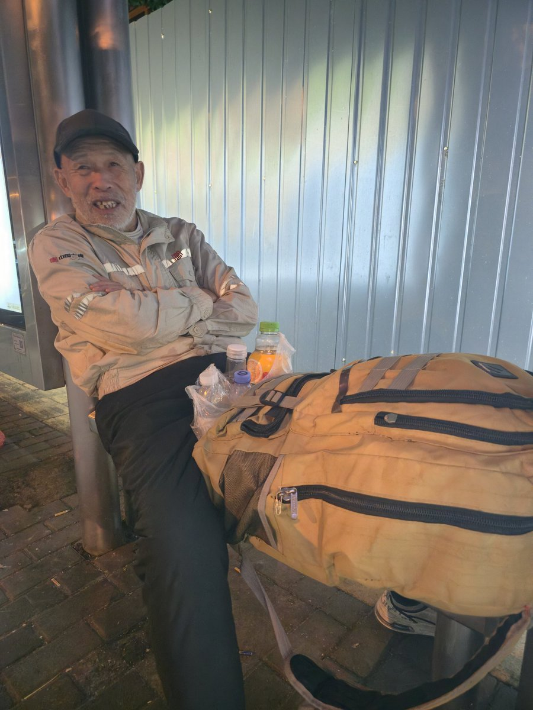
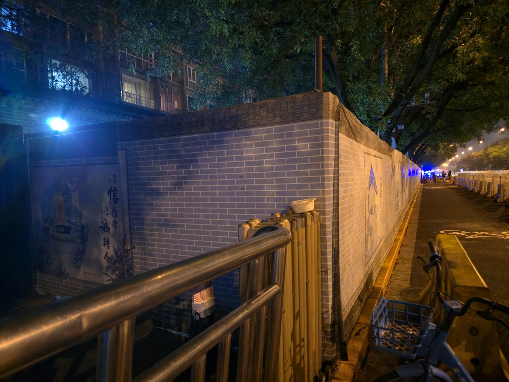
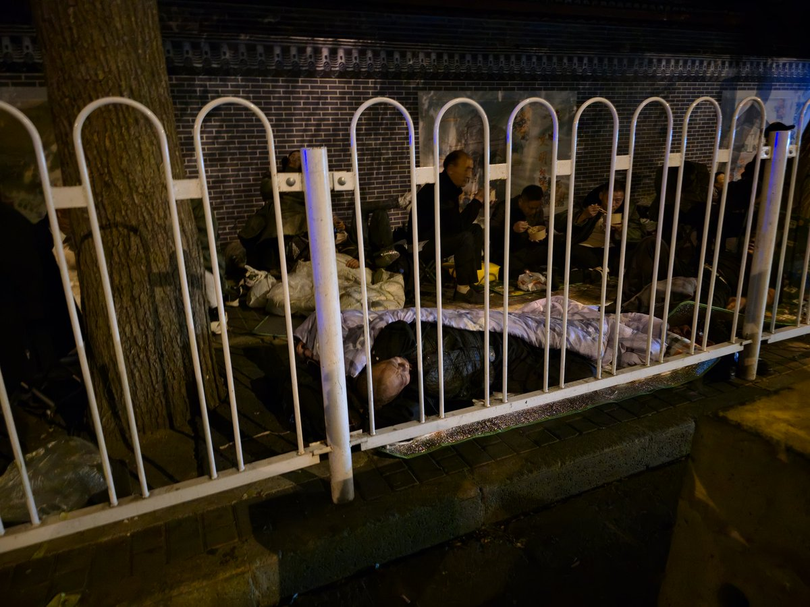

是这样的..
以及什么时候人们才能意识到国家暴力机关给人带来的并不是安全感，而是额外的不安感..
尤其是在各种机场，穿着军装（？）的巡逻人员…全世界都是…无论是中国的还是荷兰的还是印度的还是泰国的..

以及什么时候人们才能意识到国家暴力机关给人带来的并不是安全感，而是额外的不安感..
尤其是在各种机场，穿着军装（？）的巡逻人员…全世界都是…无论是中国的还是荷兰的还是印度的还是泰国的..



每次到北京都会微妙的感到不适
从公交车都有安全员，再到地铁门口有随机查身份证的警察，再到地铁过安检都手持一个停的牌子横在你面前等等...
这座城市到处都有着种以安全为名义的公开化的暴力。此外还有一种粉饰与区隔，这一点在信访办的门口尤为明显，地铁过站不停，街道铁皮围墙，门口禁拍禁入... https://t.co/wUzgehHX3D
从公交车都有安全员，再到地铁门口有随机查身份证的警察，再到地铁过安检都手持一个停的牌子横在你面前等等...
这座城市到处都有着种以安全为名义的公开化的暴力。此外还有一种粉饰与区隔，这一点在信访办的门口尤为明显，地铁过站不停，街道铁皮围墙，门口禁拍禁入... https://t.co/wUzgehHX3D